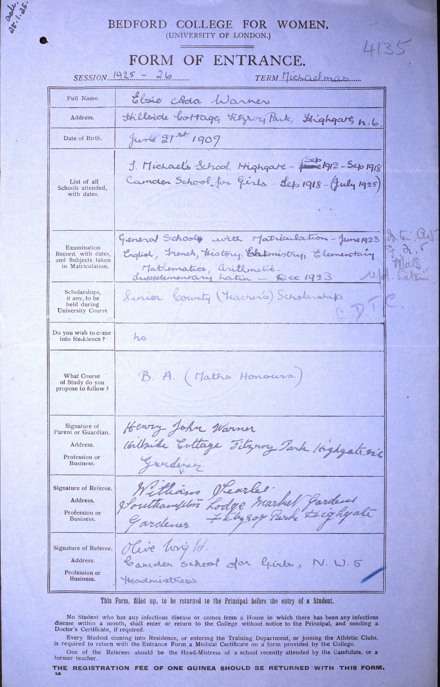

Elsie Ada Warner 1907 - 1990
[ Home ] | [ Calendar ] | [ Surnames Index ] | [ Errors ] | [ Family History ]A private secretary wine & spirit merchant-ltd and the child of Henry Warner (a domestic under gardener) and Ada Ashfield, Elsie Warner, the second cousin twice-removed on the father's side of Nigel Horne, was born in Margate, Kent, England on 21 Jun 19071,2,3. She went to Bedford College, London, England
During her life, she was living at Gardeners Lodge, Hillside, Fitzroy Park, Highgate, London on 2 Apr 19115 and on 19 Jun 19211; at 58 Valley Road, Beckenham, Kent, England on 29 Sept 19392 (when she was living with her) - less than a mile from her father Henry John who was living at 58 Valley Road; and at 75 Bromley Road in Beckenham in 1990.
She died on 8 Sept 1990 in Bromley, Kent, England3,4.
Parents
- Henry John was born on 3 Sept 1873
- Ada was born on 22 Sept 1871
Citations
- 1921 Census Of England & Wales - Findmypast (was age 13 and the daughter of the head of the household)
- 1939 Register - Findmypast (was recorded at this address)
- England & Wales deaths 1837-2007 - Findmypast
- England & Wales Government Probate Death Index 1858-2019 - Findmypast
- 1911 Census for England & Wales - Findmypast (was age 3 and the daughter of the head of the household)
Media
Elsie Ada Warner - Bedford College

1939 Register Transcription - TNA-R39-1214-1214H-009-10
England & Wales births 1837-2006 - BMD/B/1907/3/AZ/000620/169
England & Wales deaths 1837-2007 - BMD/D/1990/9/78198289
1939 Register - TNA/R39/1214/1214H/009/08
England & Wales Government Probate Death Index 1858-2019 - GBOR/GOVPROBATE/C/1990-1990/00215281
1921 Census of England & Wales - GBC/1921/RG15/00806/0481/03
Family Tree

Map
Generated by ged2site. Last updated on Jul 3, 2024
Known Issues
Residence record for 1990 contains no citation
Date of residence (2 Apr 1911) differs from mother's in same year (02 Apr 1911)